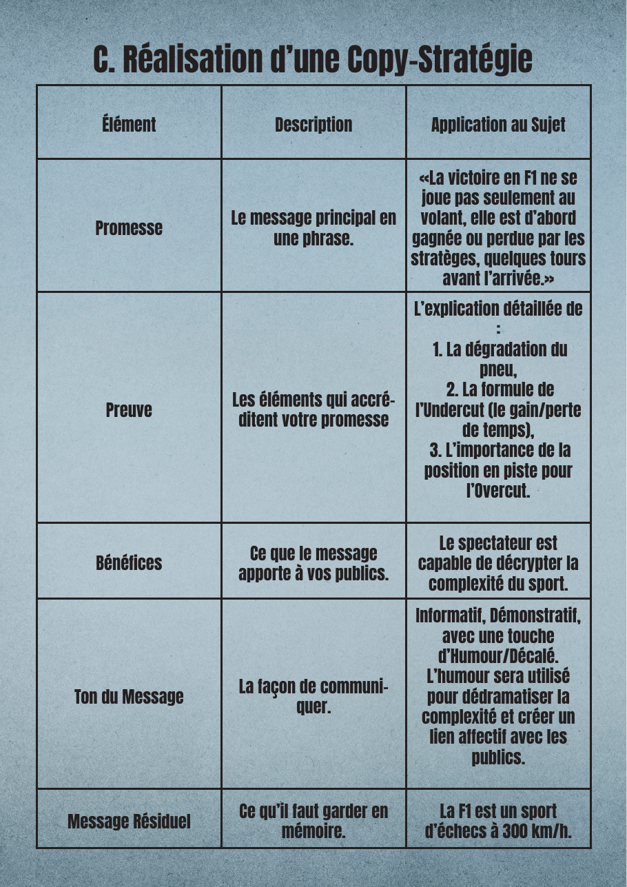

Projet 05 — Écriture de contenu
Écriture
F1 Insight
Exercice d'écriture de contenu informationnel en culture numérique : concevoir et écrire le contenu d'une vidéo de vulgarisation. La vidéo elle-même n'était pas à produire — tout l'enjeu était dans la conception et l'écriture. J'ai imaginé une plateforme fictive, F1 Insight, dédiée au décryptage de la Formule 1, et j'ai choisi le sujet le plus mal compris du grand public : la stratégie de course.
Avant d'écrire une seule ligne de voix off, définir la stratégie de communication : pourquoi ce contenu, pour qui, et avec quel message. Puis seulement, écrire un script capable de transformer un spectateur occasionnel en initié, sans le perdre ni l'ennuyer.
J'ai construit un vrai brief de création. D'abord les objectifs : cognitif (faire connaître les stratégies d'arrêt : undercut, overcut), affectif (faire aimer l'aspect intellectuel de la course) et conatif (inciter à regarder le prochain GP autrement). Ensuite les cibles : cœur de cible des passionnés 25-45 ans, cible secondaire 18-25 ans plus occasionnels.

J'ai formalisé une copy-stratégie (promesse, preuve, bénéfices, ton, message résiduel) pour fixer une ligne claire avant la rédaction. Le ton retenu : informatif et démonstratif, mais avec une vraie touche d'humour décalé pour dédramatiser la complexité.
« Leur champ de bataille, ce n'est pas l'asphalte… c'est les tableaux Excel. »Extrait du script — Séquence I
Le script voix off se déploie ensuite en 6 séquences rythmées, chacune avec son visuel suggéré : l'accroche, le rôle du pneu, l'undercut, la riposte de l'overcut, le joker de la safety car, et la conclusion. À chaque notion technique, une analogie du quotidien (la pâte à tartiner, la queue au supermarché) pour rendre la stratégie limpide.
« La F1 est un sport d'échecs à 300 km/h. »Message résiduel
Le livrable est un script complet et prêt à tourner, adossé à une stratégie assumée. Ce projet m'a montré que je maîtrise la construction d'un brief stratégique et l'écriture elle-même : trouver un angle, tenir un ton, structurer une progression et vulgariser sans appauvrir.
Je suis en voie d'acquisition sur l'écriture pleinement scénarisée pour l'image : passer du script à un véritable storyboard minuté, pensé plan par plan. Ma piste logique : produire réellement la vidéo pour confronter mon écriture au montage et boucler la chaîne conception → réalisation.